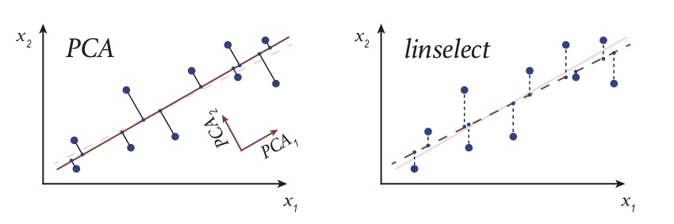
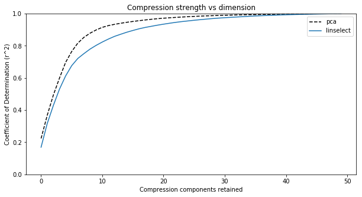
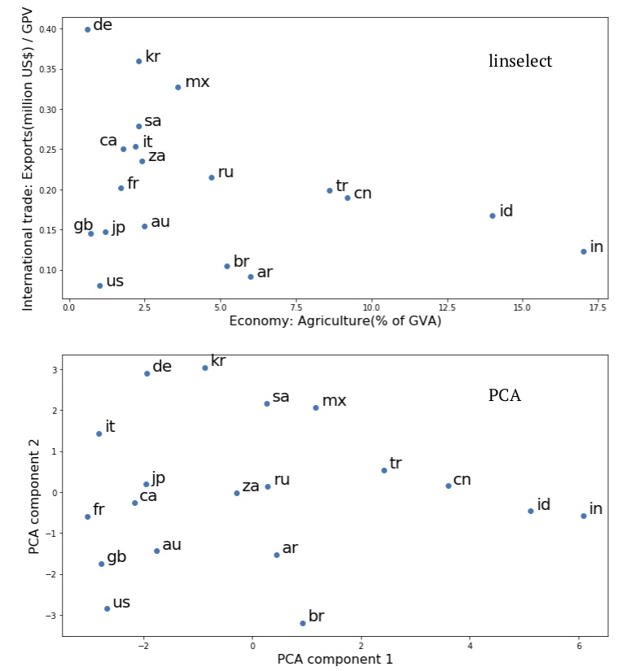
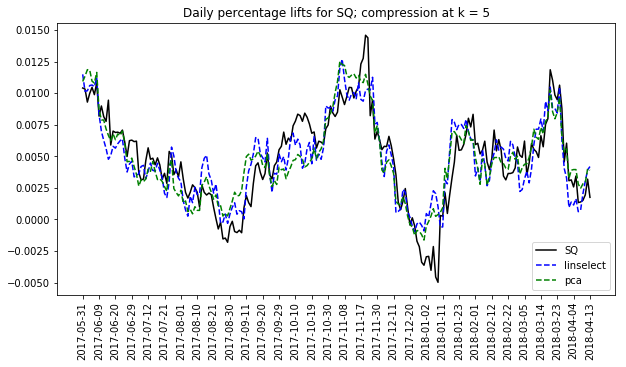

We illustrate the application of two linear compression algorithms in python: Principal component analysis (PCA) and least-squares feature selection. Both can be used to compress a passed array, and they both work by stripping out redundant columns from the array. The two differ in that PCA operates in a particular rotated frame, while the feature selection solution operates directly on the original columns. As we illustrate below, PCA always gives a stronger compression. However, the feature selection solution is often comparably strong, and its output has the benefit of being relatively easy to interpret — a virtue that is important for many applications.
We use our python package linselect to carry out efficient feature selection-based compression below — this is available on pypi (pip install linselect) and GitHub.
Linear compression algorithms
{kind=link}
To compress a data array having \(n\) columns, linear compression algorithms begin by fitting a \(k\)-dimensional line, or hyperplane, to the data (with \(k < n\)). Any point in the hyperplane can be uniquely identified using a basis of \(k\) components. Marking down each point’s projected location in the hyperplane using these components then gives a \(k\)-column, compressed representation of the data. This idea is illustrated in Fig. 1 at right, where a line is fit to some two-component data. Projecting the points onto the line and then marking down how far along the line each projected point sits, we obtain a one-column compression. Carrying out this process can be useful if storage space is at a premium or if any operations need to be applied to the array (usually operations will run much faster on the compressed format). Further, compressed data is often easier to interpret and visualize, thanks to its reduced dimension.
In this post, we consider two automated linear compression algorithms: principal component analysis (PCA) and least-squares unsupervised feature selection. These differ because they are obtained from different hyperplane fitting strategies: The PCA approach is obtained from the \(k\)-dimensional hyperplane fit that minimizes the data’s total squared-projection error. In general, the independent variables of this fit — i.e., the \(k\) components specifying locations in the fit plane — end up being some linear combinations of the original \(x_i\)‘s. In contrast, the feature selection strategy intelligently picks a subset of the original array columns as predictors and then applies the usual least-squares fit to the others for compression [1]. These approaches are illustrated in the left and right panels of Fig. 2 below. The two fit lines there look very similar, but the encodings returned by these strategies differ qualitatively: The 1-d compression returned by PCA is how far along the \(PCA_1\) direction a point sits (this is some linear combination of \(x_1\) and \(x_2\) — see figure), while the feature selection solution simply returns each point’s \(x_1\) value. One of our goals here is to explain why this difference can favor the feature selection approach in certain applications.
Our post proceeds as follows: In the next section, we consider two representative applications in python: (1) The compression of a data set of tech-sector stock price quotes, and (2) the visualization of some economic summary statistics on the G20 nations. Working through these applications, we are able to familiarize ourselves with the output of the two algorithms, and also through contrast to highlight their relative virtues. The discussion section summarizes what we learn. Finally, a short appendix covers some of the formal mathematics of compression. There, we prove that linear compression-decompression operators are always projections.

Fig. 2. A cartoon illustrating the projection that results when applying PCA (left) and unsupervised feature selection — via linselect (right): The original 2-d big dots are replaced by their small dot, effectively-1-d approximations — a projection.
{kind=link}
Applications
Both data sets explored below are available on our Github, here.
Stock prices
Loading and compressing the data
In this section, we apply our algorithms to a prepared data set of one year’s worth of daily percentage price lifts on 50 individual tech stocks [2]. We expect these stocks to each be governed by a common set of market forces, motivating the idea that a substantial compression might be possible. This is true, and the compressed arrays that result may be more efficiently operated on, as noted above. In addition, we’ll see below that we can learn something about the full data set by examining the compression outputs.
The code below loads our data, smooths it over a running 30 day window (to remove idiosyncratic noise that is not of much interest), prints out the first three rows, compresses the data using our two methods, and then finally prints out the first five PCA components and the top five selected stocks.
import pandas as pd
import numpy as np
from sklearn.decomposition import PCA
from sklearn.preprocessing import StandardScaler
from linselect import FwdSelect
# CONSTANTS
KEEP = 5 # compression dimension
WINDOW_SIZE = 30 # smoothing window size
# LOAD AND SMOOTH THE DATA
df = pd.read_csv('stocks.csv')
df = df.rolling(WINDOW_SIZE).mean().iloc[WINDOW_SIZE:]
print df.iloc[:3]
TICKERS = df.iloc[:, 1:].columns.values
X = df.iloc[:, 1:].values
# PCA COMPRESSION
s = StandardScalar()
pca = PCA(n_components=KEEP)
pca.fit(s.fit_transform(X))
X_compressed_pca = pca.transform(s.fit_transform(X))
# FEATURE SELECTION COMPRESSION
selector = FwdSelect()
selector.fit(X)
X_compressed_linselect = X[:, selector.ordered_features[:KEEP]]
# PRINT OUT FIRST FIVE PCA COMPONENTs, TOP FIVE STOCKS
print pca.components_[:KEEP]
print TICKERS[selector.ordered_features][:KEEP]
The output of the above print statements:
# The first three rows of the data frame:
date AAPL ADBE ADP ADSK AMAT AMZN \
30 2017-05-31 0.002821 0.002994 0.000248 0.009001 0.006451 0.003237
31 2017-06-01 0.003035 0.002776 0.000522 0.008790 0.005487 0.003450
32 2017-06-02 0.003112 0.002964 -0.000560 0.008573 0.005523 0.003705
ASML ATVI AVGO ... T TSLA TSM \
30 0.000755 0.005933 0.003988 ... -0.001419 0.004500 0.003590
31 0.002174 0.006369 0.003225 ... -0.001125 0.003852 0.004279
32 0.001566 0.006014 0.005343 ... -0.001216 0.004130 0.004358
TWTR TXN VMW VZ WDAY WDC ZNGA
30 0.008292 0.001467 0.001984 -0.001741 0.006103 0.002916 0.007811
31 0.008443 0.001164 0.002026 -0.001644 0.006303 0.003510 0.008379
32 0.007796 0.000637 0.001310 -0.001333 0.006721 0.002836 0.008844
# PCA top components:
[[ 0.10548148, 0.20601986, -0.0126039 , 0.20139121, ...],
[-0.11739195, 0.02536787, -0.2044143 , 0.08462741, ...],
[ 0.03251305, 0.10796197, -0.00463919, -0.17564998, ...],
[ 0.08678107, 0.1931497 , -0.16850867, 0.16260134, ...],
[-0.0174396 , 0.01174769, -0.11617622, -0.01036602, ...]]
# Feature selector output:
['WDAY', 'PYPL', 'AMZN', 'LRCX', 'HPQ']
Lines 22 and 27 in the first code block above are the two compressed versions of the original data array, line 16. For each row, the first compression stores the amplitude of that date’s stock changes along each of the first five PCA components (printed below line 17 of second code block), while the second compression is simply equal to the five columns of the original array corresponding to the stocks picked out by the selector (printed below line 24 of the second code block).
Exploring the encodings
Working with the compressed arrays obtained above provides some immediate operational benefits: Manipulations of the compressed arrays can be carried out more quickly and they require less memory for storage. Here, we review how valuable insight can also obtained from our compressions — via study of the compression components.
First, we consider the PCA components. It turns out that these components are the eigenvectors of the correlation matrix of our data set (\(X^T \cdot X\)) — that is, they are the collective, fluctuation modes present in the data set (for those who have studied classical mechanics, you can imagine the system as one where the different stocks are masses that are connected by springs, and these eigenvectors are the modes of the system). Using this fact, one can show that the components evolve in an uncorrelated manner. Further, one can show that projecting the data set down onto the top \(k\) modes gives the minimum squared projection error of all possible \(k\)-component projections. The first component then describes the largest amplitude fluctuation pattern exhibited in the data. From line 18 above, this is $[ 0.105, 0.206, -0.012, 0.201, … $]. These coefficients tell us that when the first stock (AAPL) goes up by some amount, the second (ADBE) typically goes up by about twice as much (this follows from fact that 0.206 is about twice as big as 0.105), etc. This isn’t the full story of course, because each day’s movements are a superposition (sum) of the amplitudes along each of PCA components. Including more of these components in a compression allows one to capture more of the detailed correlation patterns exhibited in the data. However, each additional PCA component provides progressively less value as one moves down the ranking — it is this fact that allows a good compression to be obtained using only a minority of these modes.
Whereas the PCA components directly encode the collective, correlated fluctuations exhibited in our data, the feature selection solution attempts to identify a minimally-redundant subset of the original array’s columns — one that is representative of the full set. This strategy is best understood in the limit where the original columns fall into a set of discreet clusters (in our example, we might expect the businesses operating in a particular sub-sector to fall into a single cluster). In such cases, a good compression is obtained by selecting one representative column from each cluster: Once the representatives are selected, each of the other members of a given cluster can be approximately reconstructed using its selected representative as a predictor. In the above, we see that our automated feature selector has worked well, in that the companies selected (‘WDAY’, ‘PYPL’, ‘AMZN’, ‘LRCX’, and ‘HPQ’) each operate in a different part of the tech landscape [3]. In general, we can expect the feature selector to attempt to mimic the PCA approach, in that it will seek columns that fluctuate in a nearly orthogonal manner. However, whereas the PCA components highlight which columns fluctuate together, the feature selector attempts to throw out all but one of the columns that fluctuate together — a sort-of dual approach.
Compression strength
To decide how many compression components are needed for a given application, one need only consider the variance explained as a function of the compression dimension — this is equal to one minus the average squared error of the projections that result from the compressions (see footnote [4] for a visualization of the error that results from compression here). In the two python packages we’re using, one can access these values as follows:
>> print np.cumsum(pca.explained_variance_ratio_)
[ 0.223 0.367 0.493 0.598 0.696]
>> print [var / 50.0 for var in selector.ordered_cods[:KEEP]]
[ 0.169 0.316 0.428 0.530 0.612]
The printed lines above show that both algorithms capture more than \(50%\) of the variance exhibited in the data using only 4 of the 50 stocks. The PCA compressions are stronger in each dimension because PCA is unconstrained — it can use any linear combination of the initial features for compression components, whereas the feature selector is constrained to use a subset of the original features.
A plot of the values above across all compression dimensions is shown in Fig. 3 below. Looking at this plot, we see an elbow somewhere between \(5\) and \(10\) retained components. This implies that our \(50\)-dimensional data set mostly lies within a subspace of dimension \(k \in (5, 10)\). Using any \(k\) in that interval will provide a decent compression, and a satisfying large dimensional reduction — a typical result of applying these algorithms to large, raw data sets. Again, this is useful because it allows one to stop tracking redundant columns that offers little incremental value.
 Fig. 3. Plots of the compression strength (coefficient of determination or \(r^2\)) for our two compression algorithms versus compression dimension. We see two things: (1) PCA gives a slightly stronger compression at each dimension, and (2) The full data set spans 50 dimensions, but the elbow in the plots suggests the data largely sits in a subspace having dimension between 5 to 10.
{kind=link}
G20 economic summary stats
Loading and compressing the data
In this section, we explore economic summary statistics on the 19 individual countries belonging to the G20 [5]. We scraped this data from data.un.org — for example, the link used for the United States can be found here. Our aim here will be to illustrate how compression algorithms can be used to aid in the visualization of a data set: Plotting the rows of a data set allows one to quickly get a sense for the relationship between them (here, the different G20 countries). Because we cannot plot in more than two or three dimensions, compression is a necessary first step in this process.
A sample row from our data set is given below — the values for Argentina.
[code language=”text”]
GDP growth rate(annual %, const. 2005 prices) 2.40
GDP per capita(current US\() 14564
Economy: Agriculture(% of GVA) 6
Economy: Industry(% of GVA) 27.8
Economy: Services and other activity(% of GVA) 66.2
Employment: Agriculture(% of employed) 2
Employment: Industry(% of employed) 24.8
Employment: Services(% of employed) 73.1
Unemployment(% of labour force) 6.5
CPI: Consumer Price Index(2000=100) 332
Agricultural production index(2004-2006=100) 119
Food production index(2004-2006=100) 119
International trade: Exports(million US\)) / GPV 0.091
International trade: Imports(million US$) / GPV 0.088
Balance of payments, current account / GPV -0.025
Labour force participation(female) pop. %) 48.6
Labour force participation(male) pop. %) 74.4
Comparing each of the 19 countries across these 17 fields would be a complicated task. However, by considering a plot like Fig. 3 for this data set, we learned that many of these fields are highly correlated (plot not shown). This means that we can indeed get a reasonable, approximate understanding of the relationship between these economies by compressing down to two dimensions and plotting the result. The code to obtain these compressions follows:
from linselect import FwdSelect
from sklearn.decomposition import PCA
from sklearn.preprocessing import StandardScaler
import pandas as pd
LOADING THE DATA
df = pd.read_csv(‘g20.csv’, index_col=0)
X = df.values
countries = df.index.values
FEATURE SELECTION
selector = FwdSelect()
selector.fit(X)
x1, y1 = X[:, selector.ordered_features[:2]].T
PRINCIPAL COMPONENT ANALYSIS
pca = PCA()
s = StandardScaler()
x2, y2 = pca.fit_transform(s.fit_transform(X)).T[:2]
“`
The plots of the \((x_1, y_1)\) and \((x_2, y_2)\) compressions obtained above are given in Fig. 4.
Visualizing and interpreting the compressed data
The first thing to note about Fig. 4 is that the geometries of the upper (feature selection) and lower (PCA) plots are very similar — the neighbors of each country are the same in the two plots. As we know from our discussion above, the first two PCA components must give a stronger compressed representation of the data than is obtained from the feature selection solution. However, given that similar country relationships are suggested by the two plots, the upper, feature selection view might be preferred. This is because its axes retain their original meaning and are relatively easy to interpret: The y-axis is a measure of the relative scale of international trade within each of the individual economies and the x-axis is a measure of the internal makeup of the economies.
Examining the upper, feature selection plot of Fig. 4, a number of interesting insights can be found. One timely observation: International trade exports are a lower percentage of GDP for the US than for any other country considered (for imports, it is third, just after Argentina and Brazil). This observation might be related to the US administration’s recent willingness to engage in trading tariff increases with other countries. Nations in the same quadrant include Great Britain (gb), Japan (jp), and Australia (au) — each relatively industrialized and geographically isolated nations. In the opposite limits, we have Germany (de) and India (in). The former is relatively industrial and not isolated, while the latter’s economy weights agriculture relatively highly.
Summary
In this section, we illustrated a general analysis method that allows one to quickly gain insight into a data set: Visual study of the compressed data via a plot. Using this approach, we first found here that the G20 nations are best differentiated economically by considering how important international trade is to their economies and also the makeup of their economies (agricultural or other) — i.e., these are the two features that best explain the full data set of 17 columns that we started with. Plotting the data across these two variables and considering the commonalities of neighboring countries, we were able to identify some natural hypotheses influencing the individual economies. Specifically, geography appears to inform at least one of their key characteristics: more isolated countries often trade less. This is an interesting insight, and one that is quickly arrived at through the compression / plotting strategy.

Fig. 4. Plots of the compressed economic summary statistics on the G20 nations, taken from data.un.org: linselect unsupervised feature selection (upper) and PCA (lower).
{kind=link}
Discussion
In this post, we have seen that carrying out compressions on a data set can provide insight into the original data. By examining the PCA components, we gain access to the collective fluctuations present within the data. The feature selection solution returns a minimal subset of the original features that captures the broad stroke information contained in the original full set — in cases where clusters are present, the minimal set contains a representative from each. Both methods allow one to determine the effective dimension of a given data set — when applied to raw data sets, this is often much lower than the apparent dimension due to heavy redundancy.
In general, compressing a data set down into lower dimensions will make the data easier to interpret. We saw in this in the second, G20 economic example above, where a feature set was originally provided that had many columns. Compressing this down into two-dimensions quickly gave us a sense of the relationships between the different economies. The PCA and feature selection solutions gave similar plots there, but the feature selection solution had the extra benefit of providing easily interpreted axes.
When one’s goal is to use compression for operational efficiency gains, the appropriate dimension can be identified by plotting the variance explained versus compression dimension. Because PCA is unconstrained, it will give a stronger compression at any dimension. However, the feature selection approach has its own operational advantages: Once a representative subset of features has been identified, one can often simply stop tracking the others. Doing this can result in a huge cost savings for large data pipelines. A similar savings is not possible for PCA, because evaluation of the PCA components requires one to first evaluate each of the original feature / column values for a given data point. A similar consideration is also important in some applications: For example, when developing a stock portfolio, transaction costs may make it prohibitively expensive to purchase all of the stocks present in a given sector. By purchasing only a representative subset, a minimal portfolio can be constructed without incurring a substantial transaction cost burden.
In summary, the two compression methods we have considered here are very similar, but subtly different. Appreciating these differences allows one to choose the best approach for a given application.
Appendix: Compression as projection
We can see that the composite linear compression-decompression operator is a projection operator as follows: If \(X\) is our data array, the general equations describing compression and decompression are,
Here, \(M_{compression}\) is an \(n \times k\) matrix and \(M_{decompression}\) is a \(k \times n\) matrix. The squared error of the approximation is,
This second line here shows that we can minimize the entire squared error by minimizing each of the column squared errors independently. Further, each of the column level minimizations is equivalent to a least-squares linear regression problem: We treat the column vector \(M_{compressions, j}\) as an unknown coefficient vector, and attempt to set these so that the squared error of the fit to \(X_j\) — using the columns of \(X_{compressed}\) as features — is minimized. We’ve worked out the least-squares linear fit solution in another post (it’s also a well-known result). Plugging this result in, we get the optimal \(M_{decompression}\),
To obtain the second line here, we have used (\ref{A1}), the definition of \(X_{compressed}\).
What happens if we try to compress our approximate matrix a second time? Nothing: The matrix product \(M_{compression} M_{decompression}^*\) is a projection operator. That is, it satisfies the condition
This result is easy enough to confirm using (\ref{A4}). What (\ref{A5}) means geometrically is that our compression operator projects a point in \(n\)-dimensional space onto a subspace of dimension \(k\). Once a point sits in this subspace, hitting the point with the composite operator has no effect, as the new point already sits in the projected subspace. This is consistent with our 2-d cartoon depicting the effect of PCA and linselect, above. However, this is also true for general choices of \(M_{compression}\), provided we use the optimal \(M_{decompression}\) associated with it.
Footnotes
[1] For a discussion on how PCA selects its \(k\) components, see our prior post on the topic. To identify good feature subsets, linselect uses the stepwise selection strategy. This is described in its readme. Here, we simply use the forward selection approach, but linselect supports fairly general stepwise search protocols.
[2] The tickers included are: AAPL, ADBE, ADP, ADSK, AMAT, AMZN, ASML, ATVI, AVGO, BABA, BIDU, CRM, CSCO, CTSH, EA, FB, GOOG, GPRO, HPE, HPQ, IBM, INFY, INTC, INTU, ITW, LRCX, MSFT, NFLX, NOK, NVDA, NXPI, OMC, ORCL, PANW, PYPL, QCOM, SAP, SNAP, SQ, SYMC, T, TSLA, TSM, TWTR, TXN, VMW, VZ, WDAY, WDC, and ZNGA.
[3] Workday (WDAY) is a SaaS company that offers a product to businesses, Paypal (PYPL) is a company that provides payments infrastructure supporting e-commerce, Amazon (AMZN) is an e-commerce company, Lam Research (LRCX) makes chips, and Hewlett-Packard (HPQ) makes computers. Each of these are representatives of a different sub-sector.
[4] We can also get a sense of the compression error by plotting the compressed traces for one of the stocks.  The plot at right does this for Square inc. The ups and downs of SQ are largely captured by both methods. However, some refined details are lost in the compressions. Similar accuracy levels are seen for each of the other stocks in the full set (not shown here).
{kind=link}
[5] The missing twentieth member of the G20 is the EU. We don’t consider the EU here simply because the site we scraped from does not have a page dedicated to it.
 Jonathan grew up in the midwest and then went to school at Caltech and UCLA. Following this, he did two postdocs, one at UCSB and one at UC Berkeley. His academic research focused primarily on applications of statistical mechanics, but his professional passion has always been in the mastering, development, and practical application of slick math methods/tools. He worked as a data-scientist at Square for four years and is now working on a quantitative investing startup.
Jonathan grew up in the midwest and then went to school at Caltech and UCLA. Following this, he did two postdocs, one at UCSB and one at UC Berkeley. His academic research focused primarily on applications of statistical mechanics, but his professional passion has always been in the mastering, development, and practical application of slick math methods/tools. He worked as a data-scientist at Square for four years and is now working on a quantitative investing startup.